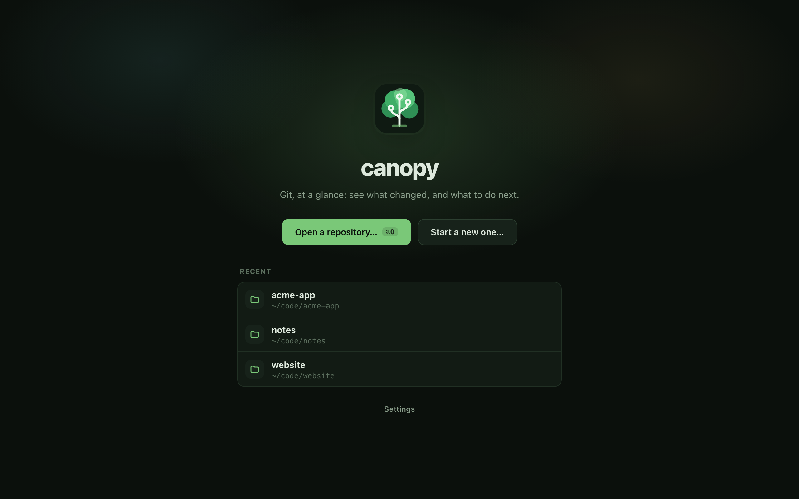
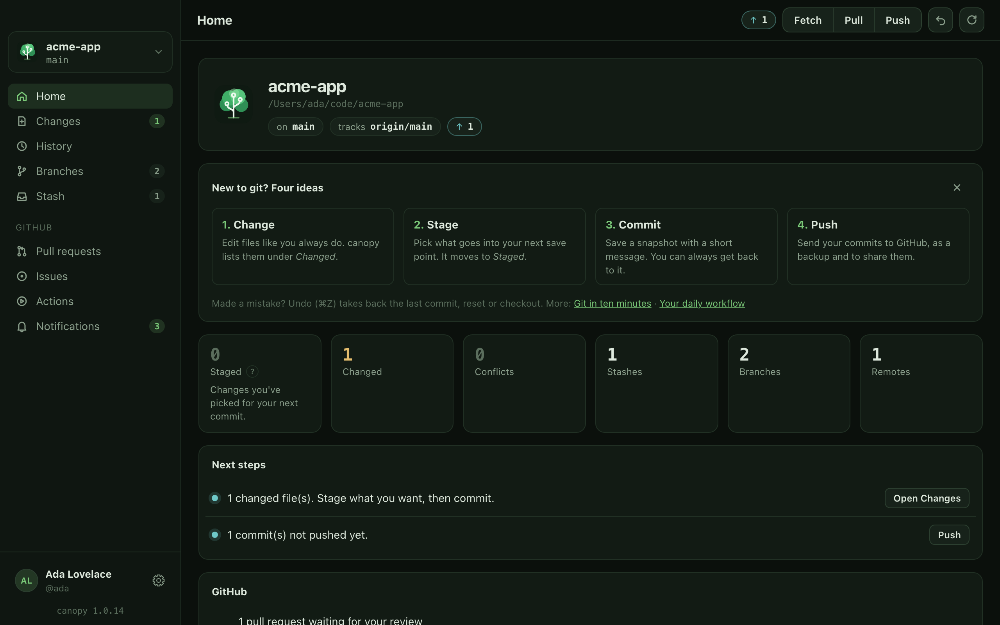
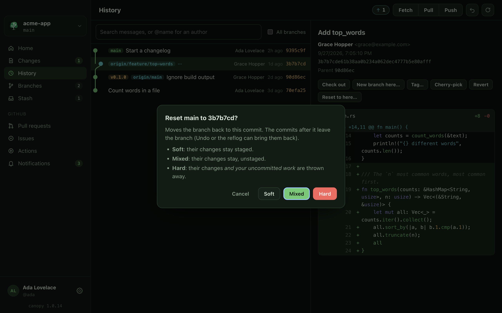
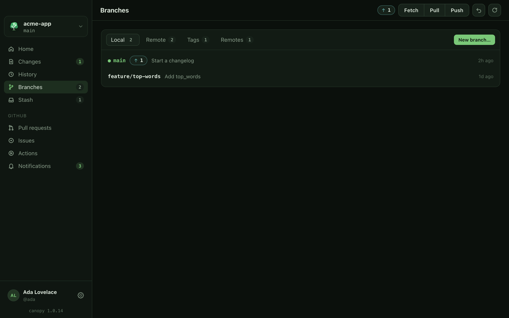
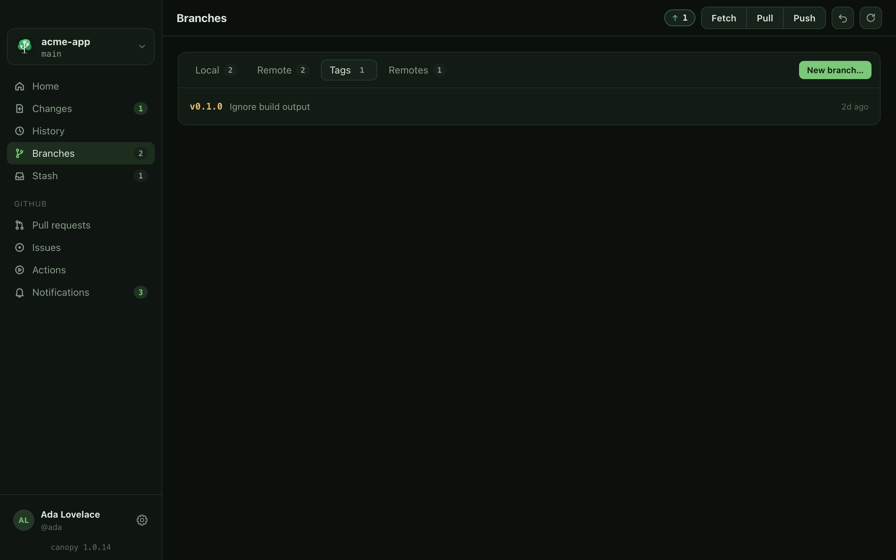
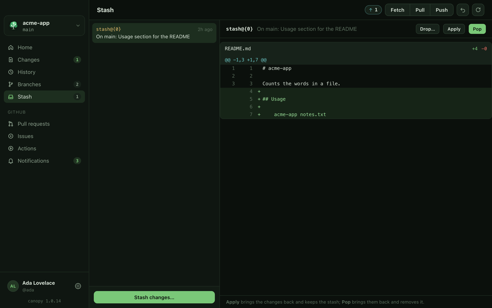
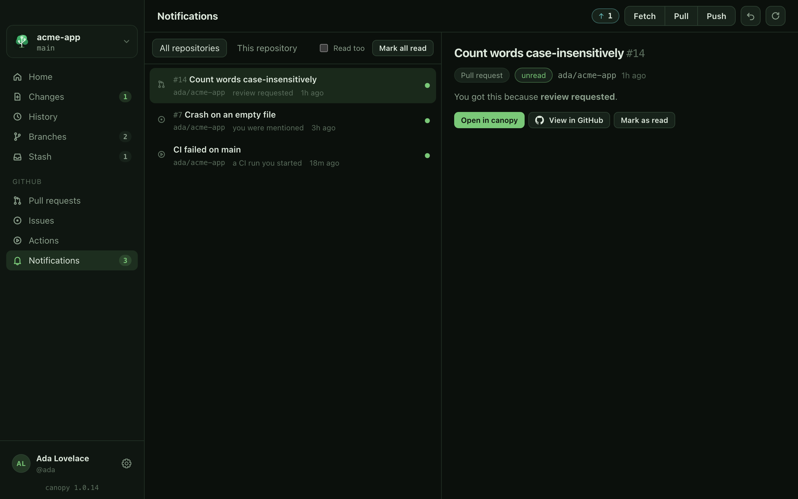
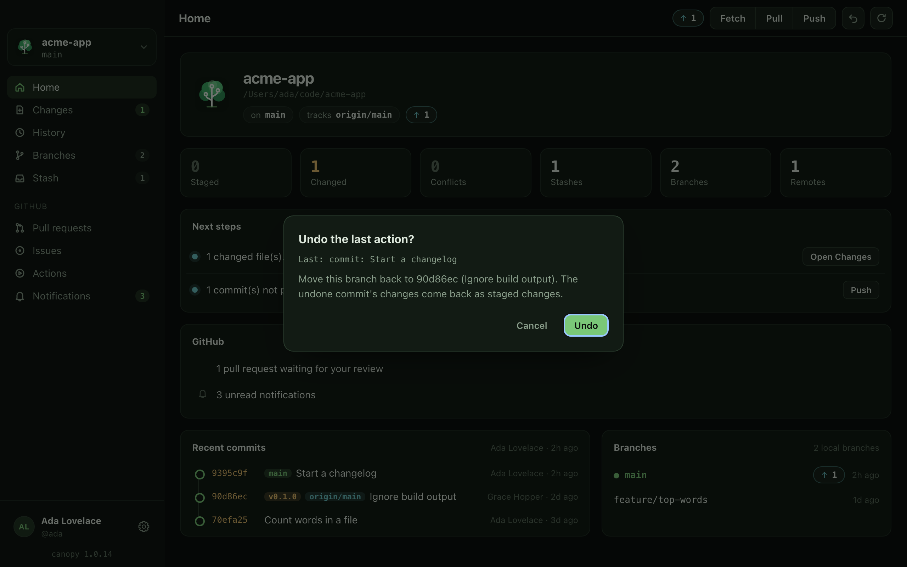
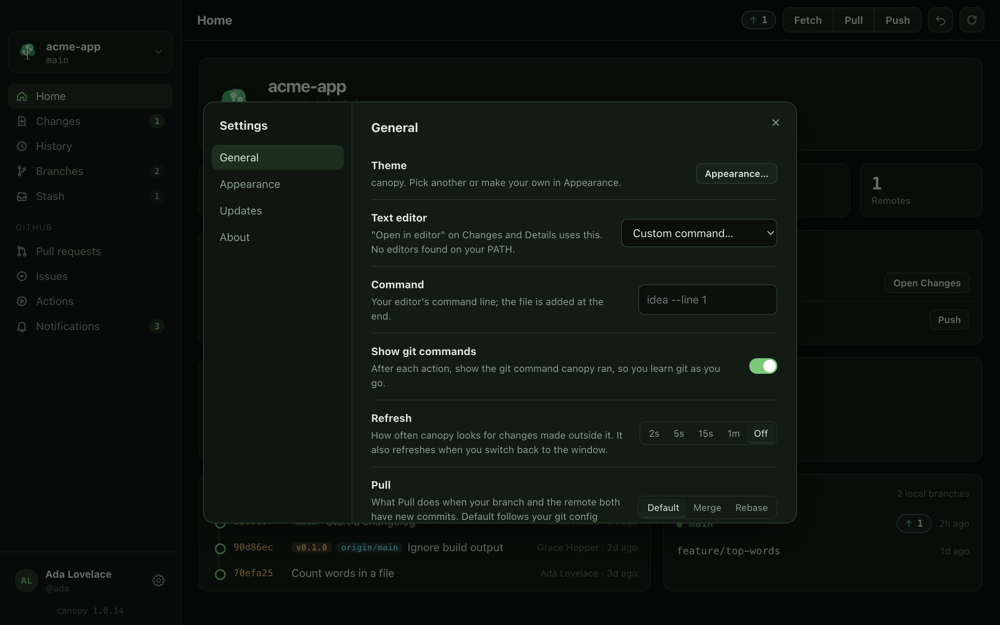

A tour of canopy desktop
Every page of the desktop app, what it shows, and what you can do there.
canopy desktop is a window with a sidebar on the left and one page on the right. The sidebar lists the pages you use on the open repository, and the toolbar above every page has the buttons you use most: Fetch, Pull, Push, undo and refresh.
This page walks through the app in the order you meet it: the welcome screen, the window, then each sidebar page. Everything canopy does is a normal git command. With Show git commands on (Settings, General), a notice shows the command it ran after each action.
The welcome screen#
Until a repository is open, canopy shows the welcome screen.

- Open a repository… (⌘O (Ctrl+O on Windows and Linux)) picks a folder that is already a git repository.
- Start a new one… turns a folder into a repository and can put it on GitHub. See Start a new repository.
- Recent lists the repositories you opened before. Click one to open it. The small x on a row removes it from the list, and Settings opens the settings.
The window#
- Repository switcher (top of the sidebar): shows the repository name and the branch you are on. Click it to close this repository and return to the welcome screen.
- Sidebar pages: Home, Changes, History, Branches and Stash, then a GitHub group with Pull requests, Issues, Actions and Notifications. A number beside a page is a count: changed files or conflicts, branches (shown when you have more than one), stashes, and unread notifications.
- Toolbar: the page title, then pills for commits to push (↑N) or pull (↓N), the Fetch, Pull and Push buttons, an undo button and a refresh button.
- Bottom of the sidebar: your GitHub account (click it to see your account, your git name and email, and whether git and the GitHub CLI are found), the gear for Settings, and the canopy version.
The first nine pages have shortcuts: ⌘1 to ⌘9 (Ctrl+1 to Ctrl+9 on Windows and Linux) go to them in sidebar order, so ⌘1 is Home and ⌘9 is Notifications. ⌘R refreshes by hand, though canopy also notices changes on its own. See keyboard shortcuts for the full list.
Home#
The starting point. It shows where you are and what to do next.

- A card with the repository name, its folder, the branch you are on (on main), the branch it follows (tracks origin/main) and how far ahead or behind you are. During a merge or rebase it also shows a badge saying so.
- Tiles for Staged, Changed, Conflicts, Stashes, Branches and Remotes. Each has a small ? that explains the word in plain language.
- Next steps: plain sentences such as "1 changed file(s). Stage what you want, then commit." with a button that does it, such as Open Changes, Commit, Push, Pull, Open History or Open Branches.
- A GitHub card when the repository is on GitHub and you are set up: the pull request for your branch, reviews waiting for you and unread notifications. If the latest CI run failed, a banner offers Details, View in GitHub and Fix with your AI assistant.
- Recent commits (the latest 12) and Branches (up to 10).
The "New to git?" card#
The first time, Home also shows a short card, "New to git? Four ideas": change, stage, commit and push. Dismiss it when you are done. Show it again in Settings, General brings it back.

Changes#
Where you stage and commit. Files are listed on the left in groups, and the diff of the selected file is on the right. The groups are Conflicts (only during a merge or rebase), Staged and Changes. A letter beside each file says what happened to it: M changed, A added, D deleted, R renamed.

- Click the + beside a file to stage it, or − to unstage it. Stage all and Unstage all do every file. With the file list focused, ↑ and ↓ (or j and k) move the selection and space stages or unstages the selected file.
- Above the diff: Open in editor, Stage file (or Unstage file) and Discard…. Discard throws away your edits to the file, and for a new file deletes it. It asks first, because git cannot bring them back.
- Each block of changes has Stage hunk (or Unstage hunk). To stage single lines, click a + or − line to pick it (shift-click for a range), then press Stage N lines.
- The commit box has a Summary, a Description, an Amend last commit checkbox and the commit button. The button says Commit N files when something is staged, Stage all & commit when nothing is, Amend when the checkbox is ticked, and is greyed out with Nothing to commit when the folder is clean. ⌘↵ (Ctrl+Enter on Windows and Linux) commits from either text box.
- During a merge, rebase, cherry-pick or revert, a banner says so and offers Abort and a continue button. Conflicted files come first, with Keep mine (ours), Take theirs and Mark resolved.
- When there is nothing to show, the page says "Working tree clean".
The pages Write good commits, Fix your last commit and Resolve a merge conflict use this page.
History#
The commits on your branch, newest first, drawn as a graph. Click a commit to see its title and message, who made it and when, its full id, its parents and its diff. ↑ and ↓ (or j and k) move through the list.

- The search box finds commits by message, or by author with @name. / jumps to it. Tick All branches to include every branch, not only this one. Load more at the bottom shows 200 more.
- Buttons on the selected commit: Check out, New branch here…, Tag…, Cherry-pick, Revert and Reset to here…. The ones that can lose work explain what they will do first.
- A commit's parents are links; click one to jump to it.

Branches#
Four tabs, each with a count: Local branches, Remote branches, Tags and Remotes (the servers you push to, with their addresses). New branch… starts one from where you are.

On a local branch you can Check out, Merge into the current branch, Rebase onto it, Rename or Delete. The branch you are on shows only Rename. Each of these asks first and says what it will do. The Remote tab can check a branch out as a local one, merge it, or delete it on the server. See Branches, merging and rebasing.
The Tags tab lists tags with Check out, Push and Delete. Make a tag from History with Tag…. See Tag a version and publish a release.

Stash#
A shelf for half-done work. Stash changes… puts your uncommitted changes aside (you can name it, and tick Include new (untracked) files) and leaves a clean folder. Pick a stash in the list to see what is in it, then Apply it (bring the changes back and keep the stash), Pop it (bring them back and remove it) or Drop… it. Dropping deletes it for good, so it asks first. See Put work aside with the stash.

The GitHub pages#
These use the GitHub CLI (gh) with your own login; canopy never asks for a password or stores a token. If gh is not installed or you are not logged in, the page says so and shows the commands to run, with a Try again button. In a repository with no GitHub remote they say that instead. The git pages work either way. See Working with GitHub.
Pull requests#
Filter by Open, Mine, To review or All. Each row shows the author, the branches, whether checks passed and the review state. Pick one for its description, checks, reviews and comments. Buttons: View in GitHub, Check out, Comment…, Review…, Close… and Merge…. New PR… opens one from your branch. See Review a pull request.

Issues#
Filter by Open, Assigned to me or All. On the selected issue: Comment…, and Close or Reopen. New issue… is at the top.
Actions#
Recent CI runs for This branch or All branches, refreshed every 15 seconds while you look. Pick a run to see its jobs and steps. For a failed run you also get the end of its log, Details, Re-run failed jobs and Fix with your AI assistant, which writes a prompt from the failure and opens the assistant with it. See Fix a failing CI run.

Notifications#
Your GitHub notifications, from All repositories (the default) or just This repository. Tick Read too to include the ones you have read. On one, Open in canopy jumps to the pull request or issue (when it belongs to the open repository), View in GitHub opens the browser and Mark as read clears it. Mark all read clears the lot after asking.

Undo#
The undo button in the toolbar (or ⌘Z, Ctrl+Z on Windows and Linux) takes back the last commit, reset or checkout. It shows what it will change before it does anything, and your uncommitted changes are kept. See Undo a mistake.

Settings#
The gear at the bottom of the sidebar (or ⌘,, Ctrl+, on Windows and Linux) opens Settings, with four sections. General has the theme shortcut, your text editor, Show git commands, Refresh (how often canopy looks for outside changes), Pull (Default, Merge or Rebase), the AI assistant, and the recent list. Appearance picks and edits themes. Updates checks for a new version. About has the version and links. See Settings for every option.
